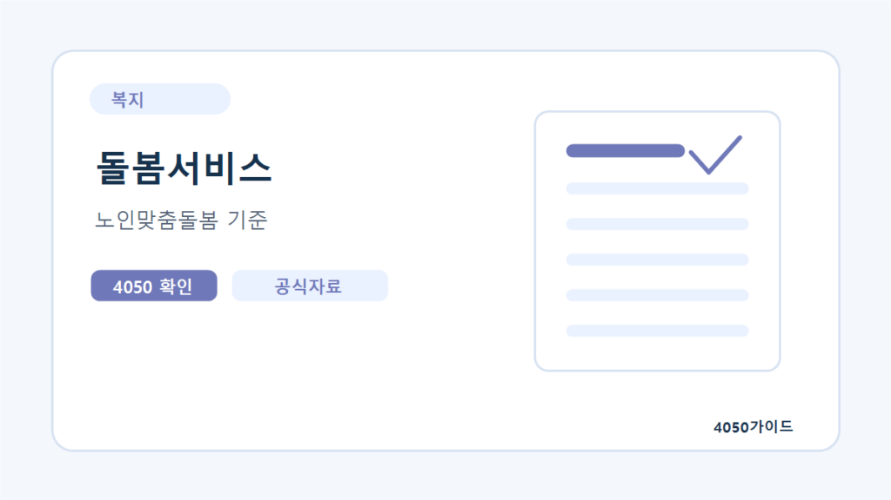

확인 필요 자격증돌봄 분야 재취업 요양보호사 사회복지사 생활지원사 비교
돌봄 분야의 직무는 같은 일을 다른 이름으로 부르는 것이 아닙니다. 직접 돌봄, 상담·행정, 안부 확인 등의 역할과 채용 조건을 구분해 준비하세요.
돌봄 직무를 자격증 이름만으로 묶지 마세요
요양보호사와 사회복지사, 노인맞춤돌봄서비스의 생활지원사는 맡는 역할과 채용 조건이 다릅니다. 한 직무의 교육을 마쳤다고 모든 돌봄 공고에 같은 자격으로 지원할 수 있는 것은 아닙니다. 지역의 실제 공고에서 필수 자격과 담당 업무를 읽고 준비가 필요한 부분을 확인하세요.
‘생활지원사 자격증’이라는 민간 교육 광고를 보면 해당 자격이 관심 공고의 필수 조건인지 먼저 확인해야 합니다. 민간 교육 수료증과 국가 자격, 채용기관의 우대 조건은 구분해서 볼 필요가 있습니다. 이 글은 특정 기관의 채용을 보장하거나 교육 상품을 추천하는 글이 아닙니다.
업무와 준비 방식 비교
| 직무 | 주로 살펴볼 업무 | 준비 전 확인 |
|---|---|---|
| 요양보호사 | 신체·일상생활 지원 등 직접 돌봄 | 교육·실습·시험, 실제 돌봄 범위 |
| 사회복지사 | 상담, 사례·프로그램·행정 업무 | 자격 취득 요건, 이수·실습, 기관별 역할 |
| 생활지원사 | 노인맞춤돌봄의 안부 확인·생활 지원 등 | 해당 수행기관의 공고와 필수·우대 조건 |
기관마다 직무 배치가 다를 수 있습니다. 사회복지사라는 이름이 붙었다고 사무실 업무만 있다고 생각하거나, 생활지원사의 업무를 장기요양 방문요양과 동일하게 보지 마세요. 공고와 면접의 설명을 기준으로 비교해야 합니다.
교육 기간과 근무 가능 시간을 함께 계산하세요
자격을 준비할 때 수업을 들을 수 있는 시간뿐 아니라 실습 가능한 요일과 이동 시간을 확인하세요. 재직 중이거나 부모님을 돌보는 상황이라면 주간 실습 일정이 부담이 될 수 있습니다. 교육기관에 실습 장소와 배정 방식, 별도 비용, 변경 시 처리를 물어보세요.
처음에는 교육 광고를 비교하기보다 통근 가능한 기관의 공고를 살펴보는 편이 좋습니다. 준비한 자격으로 지원할 직무가 무엇인지, 공고의 근무시간이 생활과 맞는지 확인한 뒤 교육을 결정하세요.
돌봄 경험을 경력으로 설명하는 방법
가족을 돌본 경험은 지원 동기를 설명할 수 있지만 전문 자격이나 근무 경력을 대신하지 않습니다. 확인 가능한 업무 경력과 개인 경험을 분리해 적으세요. 예를 들어 일정 조정, 기록 관리, 이용자와 보호자 소통 경험은 구체적으로 설명하되 의료행위나 전문 상담을 수행했다고 과장하면 안 됩니다.
다음은 작성용 예시입니다. ‘부모님을 돌봐서 무엇이든 할 수 있다’ 대신 ‘가족 돌봄 과정에서 일정과 준비물을 기록한 경험이 있고, 직무에 필요한 교육·실습을 별도로 준비하고 있다’처럼 범위가 분명한 문장이 낫습니다. 실제 본인의 경험으로만 바꾸어 사용하세요.
면접에서 급여 외에 확인할 조건
- 근무지와 이용자 방문 범위, 이동에 필요한 시간
- 담당 이용자와 업무 범위, 기록 작성 방식
- 교대·주말·대체근무와 휴게시간
- 급여 구성과 실제 계약 근로시간
- 안전 교육, 동료 지원, 어려운 상황의 보고 체계
운전이 필요한지, 개인 차량을 써야 하는지, 이동 비용이 어떻게 처리되는지도 공고에 따라 확인하세요. 이용자 개인정보를 기록하는 업무라면 기관의 보안·보고 절차를 따라야 합니다. 개인 휴대전화에 자료를 무단으로 모아두는 방식은 피하세요.
준비 순서를 정리하면
관심 직무 선택 → 실제 채용 조건 확인 → 자격·교육·실습 계획 → 지원서 작성 → 근로조건 확인 순으로 준비해보세요. 이는 편집 제안입니다. 이미 자격을 갖췄다면 다시 교육부터 시작하기보다 공고와 상담으로 부족한 부분을 좁히는 편이 좋습니다.
자주 묻는 질문
생활지원사 민간 자격증을 먼저 따야 하나요?
해당 수행기관 공고에서 필수인지 우대인지 확인하세요. 민간 교육 광고만으로 채용 요건이라고 판단하지 마세요.
가족 돌봄 경험이 근무 경력으로 인정되나요?
지원 동기로 설명할 수 있지만 자격이나 공식 근무 경력과 동일하지 않습니다. 공고의 경력 인정 기준을 확인하세요.
요양보호사와 사회복지사 중 무엇이 더 좋나요?
직접 돌봄과 상담·행정 등 역할이 다릅니다. 자신의 근무 조건과 관심 업무, 준비 기간으로 비교하세요.
공식 자료와 확인일
2026년 10월 6일 확인한 자료와 편집자의 준비 제안을 구분해 정리했습니다. 개인별 계약·지원 자격·처리 결과는 해당 기관에서 확인하세요.